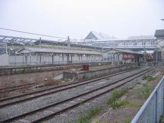

ホテルをチェックアウトして、旧軽井沢銀座にでも寄って行こうか……なんて話していたら、軽井沢駅の隣に見つけてしまった旧軽井沢駅記念館。ここ、とってもおもしろい(お嫁さんは、あんまりおもしろくなかった模様)。
ホテルをチェックアウトして、旧軽井沢銀座にでも寄って行こうか……なんて話していたら、軽井沢駅の隣に見つけてしまった旧軽井沢駅記念館。ここ、とってもおもしろい(お嫁さんは、あんまりおもしろくなかった模様)。
幸いなことに、結婚五周年を迎えることができた。とゆーわけで、前日から式を挙げたトラトネス村の教会……ではなくて、軽井沢のホテル・ブレストンコートへ行く。石の教会は、エントランスのあたりがすっかりかわっていてビックリ。ホテルのコテージも一部新しくなっていて、今回はそこへ宿泊してみた。んが、デザイン重視で実用性が……という感じになってしまっていて、ちと残念。そもそも、軽井沢自体が予想以上に寒い。避暑地というのはわかるけど、あきらかに「寒い」。ウインドブレーカーでしのぐが、長袖を持って行けばよかった。到着時の軽井沢駅の気温は、たしか19℃だったような……。
三年前に前回来たときと同様、軽井沢野鳥の森を散策する。クマ(ツキノワグマ)が頻出しているとのことなので、ピッキオ・ビジターセンターでクマよけの鈴を借りる(無料)。50分ほど時間的に先行しているネイチャー・ウォッチングのグループに、あっという間に追いついてしまう。彼らはドングリ池から林道へショートカットして出るはずなので、我々はあずま屋と観察小屋を経由して林道へ出る。こちらの方が、遠回りになる。で、(私だけ)忘れていたのが虫除け。体熱と炭酸ガスに誘われて、虫が顔の周りをずっと飛び回る。勘弁して～。ぐるっとひとまわりして戻ってきたら、今回はホテルから出かけずに散歩をしたり本を読んだり……。
ホテルをチェックアウトして、旧軽井沢銀座にでも寄って行こうか……なんて話していたら、軽井沢駅の隣に見つけてしまった旧軽井沢駅記念館。ここ、とってもおもしろい(お嫁さんは、あんまりおもしろくなかった模様)。
館内は残念ながら撮影禁止なのだが、館内からホームに出ることができる。こちらは、撮影可能。このホームは、もちろん現在使われていない。そして同じく、もちろん現在使われていないアプト式鉄道の機関車。66.4パーミルの標識が、なつかしい。
アプト式鉄道時代のレール。こんな仕組を使っていたんだねぇ。
 EF63。小学生のとき、長野県の菅平へ家族で旅行した。横川駅で、父が峠の釜飯を買ってきてくれてうれしかった。
EF63。小学生のとき、長野県の菅平へ家族で旅行した。横川駅で、父が峠の釜飯を買ってきてくれてうれしかった。
見よ! これが電磁吸着ブレーキだだだ! 急勾配は上りももちろん大変だが、下りの速度超過も問題。いかに減速するか、が大事。
屋外展示されているのは、2号機だった。EF63って東芝製なのね。ちなみにEF58は日立製。
昔、軽井沢には「草軽電気鉄道」という軽便鉄道があった(んだって)。最近LRT(ライトレール)が流行っているみたいだから、復活させたらどうだろう? でもクルマで来る観光客の方が多いだろうから、色々むずかしいだろうなぁ。
 軽井沢駅。現在は使用していない、JRの横川側。奥に見えるキレイなホームが、長野新幹線のもの。しなの鉄道のホームは、駅舎の向こう側に位置している。
最後に、行きに乗った新幹線あさま。撮影場所は、東京駅。こいつは新幹線のくせに、なんと30パーミルの勾配を減速なしで登ることができる。もはや人間ぢゃない←新幹線だって。
お嫁さんが東京ディズニーシーへ行きたいと言うので、仰せの通りに東京ディズニーシーへ。アトラクションとショウは、以下の通り。
メシは、以下の通り。
アクアトピアに乗ろうとしたら、システム調整で止まっていた。夜は復活していたんだけど、今回はいいかってことで「びしょ濡れコース」は見るだけ。アラビアンコーストでキャラバンカルーセルのバックにディズニーマジック・イン・ザ・スカイを観ようと思っていたのだが、今回も強風のため中止。歩いている途中、ヤンキーママっぽいのがすごい勢いでベビーカーを押しながら向かって来た。ぶつかりそうだと予想して停止したが(人が多くて、避けるスペースはなかった)、向こうはかまわずぶつかってきてそのままなにも言わずに行ってしまった。そのすばらしい価値観に乾杯(ディズニーシーなので、アルコールOK)。
いよいよ自宅のPC(Cathy)が重くて使いものにならなくなってきたのだが、新しいPCを並行稼動させて移行するのは物理的な設置場所の問題から無理。実家の参号機(EVA-03)と同様、換装(パーツ交換)することにした。とゆーわけで、アキバへ買い出し。SLI構成にするほどのものではないので、M/BはASUSTeKのM2N-Eにする。CPUは、長年の夢(というほどでもないが)のAthlon。Athlon 64 X2 4600+ のTDP 65W版を探すが、どこも売り切れ。M/BのBIOSをアップデートしないといけない可能性が高いこと・価格が若干高いこと・どうしてもとこだわる理由も特にない、とゆーことで通常版を購入。ケースも流用するつもりだったので、電源ユニットも購入。
帰宅後、20:00頃から作業開始。システム全体の負荷軽減を狙って、サウンド機能はオンボードではなく既存のSoundBlaster Live! Valueを流用する。またCUSL2で使用していたUSBの増設ブラケットも、ちゃっかり(?)流用。OS(Windows XP Professional SP2)を入れて、Windows Update。その後、各種アプリケーションを入れていく。iTunesで、H.264の動画がスムーズに再生されることに感動。んが、MTV1000でオーバーレイ画像が更新されない現象に遭遇してしまう。結局nViewのオプションは関係なくて、TV Recording Managerの設定で解決した。とりあへず最低限必要な設定のみ終わらせて、しばらく様子を見ることにする。